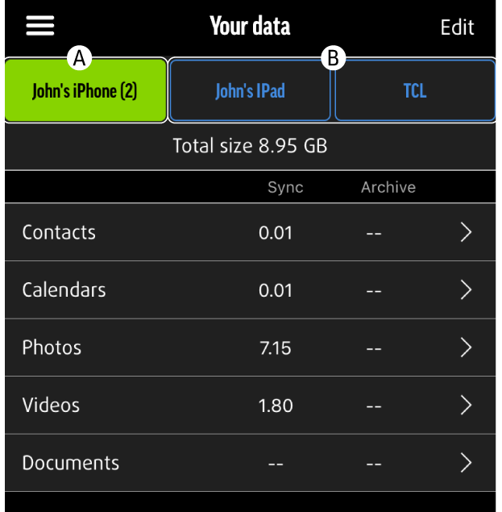
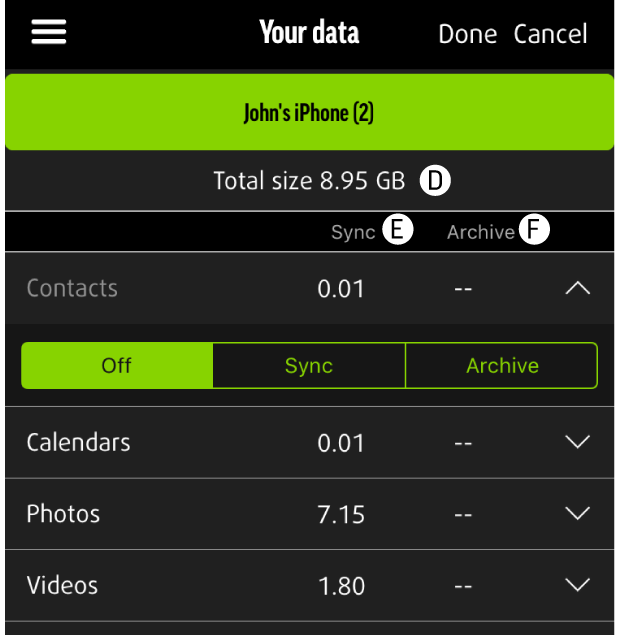
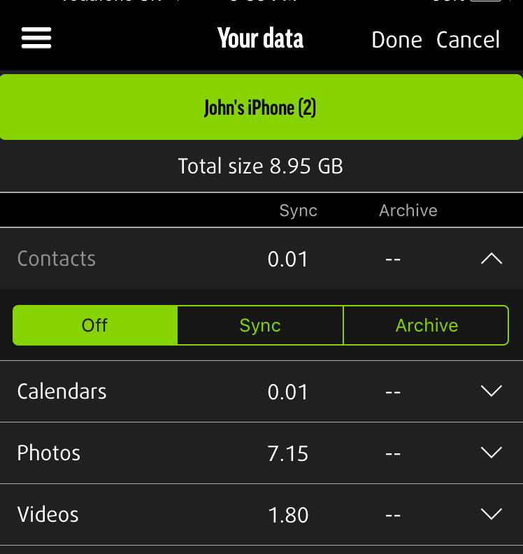

Your data


1.Connected Device’s Backup (A)
The green box at the top indicates the device you have connected to your MEEM cable currently. This will be at the top left if you have multiple devices backed up to your MEEM cable.
2.Other Device’s Backups (B&C)
The blue box(s) at the top of the screen to the right of the green box are your backups from other devices that you have backed up to this MEEM cable.
3.Total Size (D)
Total amount of synced and archived data stored on MEEM for that device.
4.Sync (E)
The amount of data that is synced between MEEM and the device in each category.
5.Archive (F)
The amount of data that has been archived to MEEM and deleted from the device.
In each category, Sync and Archive will appear at the top of the screen. Only items that have been saved on MEEM and removed from the device will be shown if the Archive button is selected.
To view your backed up data, click on any category within the Your data menu. Here you will be able to see all the items that are backed up. If you have chosen Archive mode for that category, you can also view your archived items for each category here as well by pressing the Archive button at the top.
4.Edit Mode
Select Edit to change backup settings. To change the backup setting selects the appropriate button (Off, Sync, or Archive) below each category. Press done to complete editing or cancel to leave settings unchanged.
